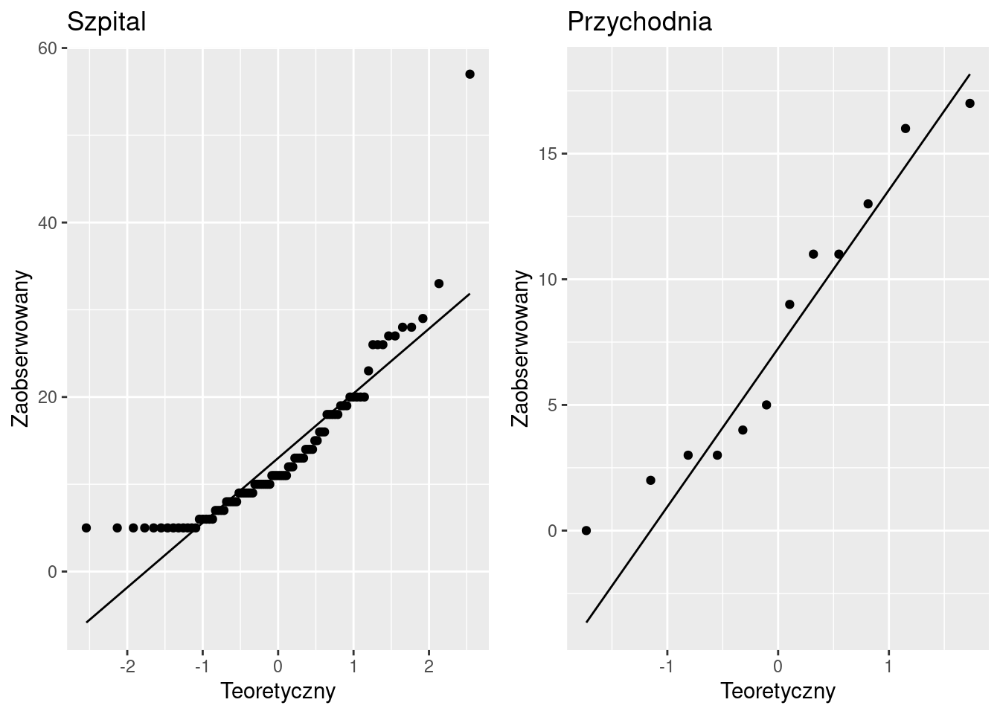
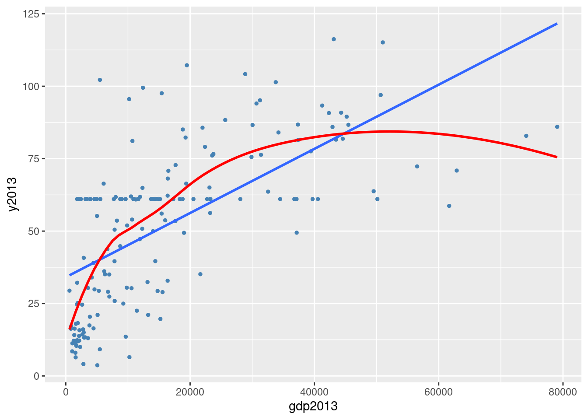
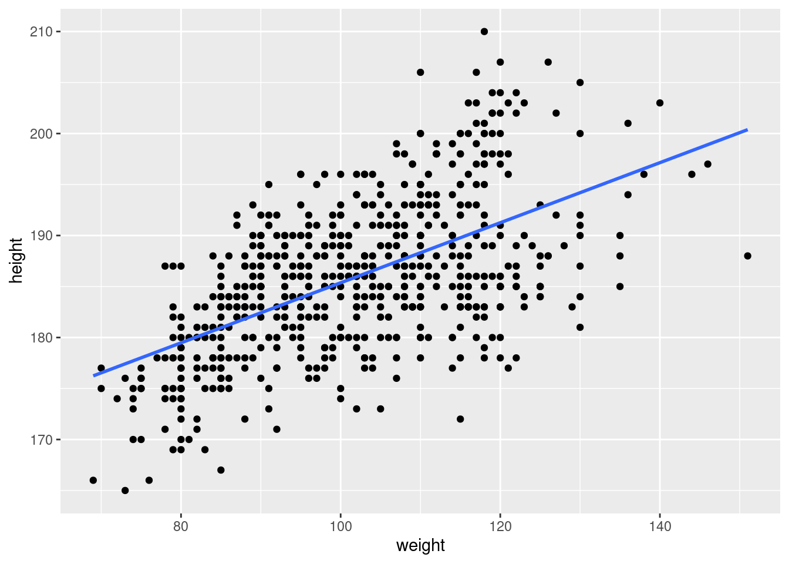
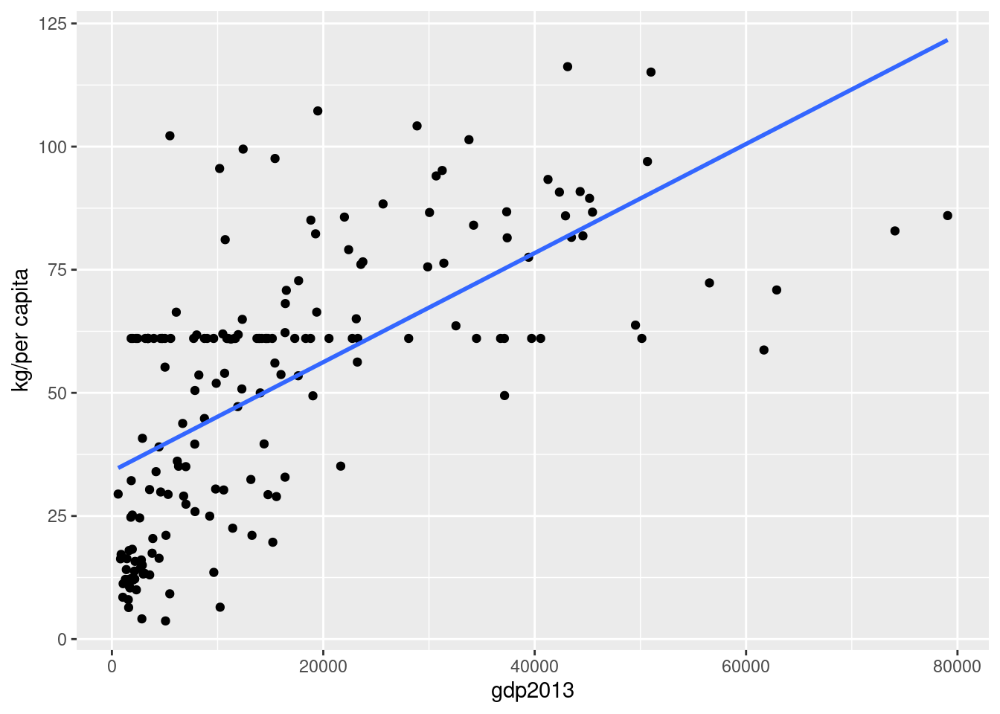
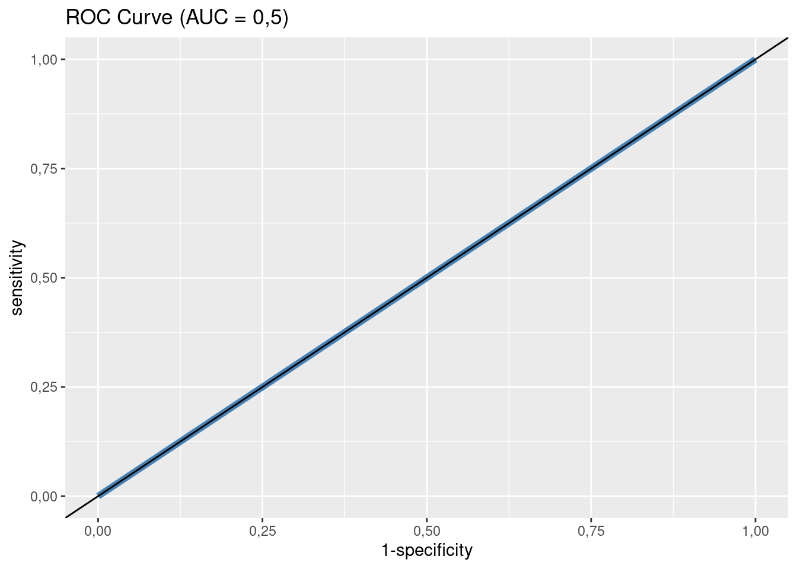

4 Analiza współzależności pomiędzy zmiennymi
Pomiędzy zjawiskami występują związki (zależności). Nauki formułują te związki w postaci praw. Jak takie prawo naukowe powstaje? Typowo w dwu etapach, najpierw za pomocą dedukcji stawia się hipotezę, potem konfrontuje się hipotezę z danymi (podejście hipotetyczno-dedukcyjne). Na tym drugim etapie używa się statystyki (lub matematyki, jeżeli prawo ma charakter deterministyczny).
Upraszczając, metoda hypodedukcji sprowadza się do dedukcyjnego sformułowania hipotezy, która następnie jest empirycznie falsyfikowana, tj. próbuje się wykazać, że jest ona nieprawdziwa. Konsekwencje: nie można dowieść prawdziwości żadnej hipotezy, można natomiast wykazać, że hipoteza jest fałszywa.
Związki między zmiennymi mogą być albo funkcyjne – wartościom jednej zmiennej odpowiada tylko jedna wartość drugiej zmiennej – albo stochastyczne – wartościom jednej zmiennej odpowiadają z pewnym przybliżeniem wartości innej zmiennej.
Problem: czy istnieje związek (zależność) pomiędzy cechami? Przykładowo: czy istnieje związek pomiędzy paleniem (przyczyna) a chorobą nowotworową (skutek), wiekiem a prawdopodobieństwem zgonu z powodu COVID-19 itd.?
Jaki jest charakter zależności? Jaka jest siła zależności?
Rodzaj konkretnej metody zastosowanej do empirycznej weryfikacji zależy w szczególności od sposobu pomiaru danych (nominalne, porządkowe, liczbowe), co pokazano na rysunku 4.1.
Rysunek 4.1: Metody statystycznej weryfikacji zależności pomiędzy zmiennymi
Optymistyczną informacją jest, że metod (oznaczonych krojem pogrubionym na diagramie), które omawiamy dalej w rozdziale, jest raptem siedem, czyli niedużo.
4.1 Dwie zmienne nominalne
4.1.1 Ryzyko względne oraz iloraz szans
Ryzyko to udział (iloraz) liczby sukcesów do liczby prób (zdarzeń pozytywnych/wyróżnionych do wszystkich). Zwykle podawany w procentach. Warto zauważyć, że jest to empiryczny odpowiednik prawdopodobieństwa.
4.1 Podawanie witaminy C a przeziębienie/brak przeziębienia
Eksperyment, który przeprowadził Linus Pauling (laureat nagrody Nobla za odkrycie witaminy C), polegał na tym, że podzielił 280 narciarzy na dwie 140-osobowe grupy. Przez 5–7 dni podawał witaminę C jednej grupie oraz placebo drugiej grupie. Obserwował zachorowania na przeziębienie przez następne dwa tygodnie. Jeden narciarz nie dokończył eksperymentu. Historia milczy, dlaczego tak się stało :-)
W grupie 139 narciarzy, którym podano witaminę C (grupa C), zachorowało 17. W grupie 140 narciarzy, którym podano placebo (grupa P) zachorowało 31. Zatem:
- Ryzyko zachorowania w grupie C wyniosło 17/139 = 12,2%.
- Ryzyko zachorowania w grupie P wyniosło 31/140 = 22,14%.
Na chłopski rozum: jeżeli witamina C nie działa, to powinien zachorować ten sam odsetek narciarzy w obu grupach. A tak, jak widać, nie jest.
Prostymi miarami oceny siły zależności mogą być:
- różnica ryzyk (risk difference),
- ryzyko względne (relative risk) oraz
- iloraz szans (odds ratio).
Jeżeli \(r_e\) oznacza ryzyko w grupie eksperymentalnej (test group, grupa narażona, exposed group), a \(r_k\) w grupie kontrolnej (control group, grupa nienarażona, unexposed group), to różnica ryzyk to po prostu \(r_e - r_k\). W przykładzie będzie to \(22,14 - 12,2 = -9,94\)% Ta miara, aczkolwiek prosta, jest rzadko stosowana.
Znacznie częściej używa się ryzyka względnego definiowanego jako \(RR = r_e/r_k\). Oczywiste jest, że \(RR < 1\) oznacza zmniejszenie ryzyka; \(RR > 1\) oznacza zwiększenie; \(RR = 1\) oznacza brak zależności.
Zamiast ryzyka (czyli ilorazu liczby sukcesów do liczby prób) można używać pojęcia szansa/szansy (odds) definiowanego jako iloraz sukcesów do porażek.
Jeżeli \(o_e\) oznacza szanse w grupie eksperymentalnej a \(o_k\) w grupie kontrolnej, to iloraz szans (odds ratio) jest definiowany jako stosunek \(\textrm{OR} = o_e/o_k\).
Przykładowo jeżeli w dwukrotnym rzucie monetą otrzymano orła i reszkę, to ryzyko otrzymania orła wynosi 1/2 = 0,5 a szansa otrzymania orła wynosi 1/1 = 1.
4.2 Narciarze Paulinga (kontynuacja)
Przypomnijmy: ryzyko zachorowania w grupie C wynosi 12,2; ryzyko zachorowania w grupie P wyniosło 22,14. Ryzyko względne wynosi zatem \(12,2/22,14 = 0,55\). Podanie witaminy C zmniejsza ryzyko zachorowania o prawie połowę.
Szansa, że narciarz z grupy C zachoruje, wynosi 17/122 = 13,9%. Szansa, że narciarz w grupie P zachoruje, wynosi 28,44%.
Zatem iloraz szans dla narciarzy wyniesie 13,9/28,44 = 0,48. Podanie witaminy C zmniejsza szansę na zachorowanie o ponad połowę. Albo 1/0,48 = 2,04, co oznacza, że narciarz, który nie brał witaminy C, ma ponaddwukrotnie większą szansę na zachorowanie.
Jak widać, dla dużych ryzyk (rzut monetą) szansa różni się znacznie od prawdopodobieństwa, ale dla małych ryzyk obie miary mają zbliżoną wartość.
Właściwości ilorazu szans:
- jeżeli równe 1, to sukces/porażka równie prawdopodobne;
- jeżeli większe od 1, to sukces jest bardziej prawdopodobny;
- jeżeli jest mniejsze od 1, to porażka jest bardziej prawdopodobna.
Dane w badaniach wykorzystujących ryzyko/szanse mają często postać następującej tabeli dwudzielnej o wymiarach \(2\times 2\) (a, b, c i d to liczebności):
| Grupa | sukces | porażka |
|---|---|---|
| grupa kontrolna | a | b |
| grupa eksperymentalna | c | d |
Dla danych w tej postaci:
\[\begin{align} \textrm{RR} &= (a/(a+b))/(c/(c+d))\nonumber \\ \textrm{OR} &= (ad)/(bc) \nonumber \end{align}\]
4.3 Narciarze Paulinga (tabela dwudzielna)
| Grupa | katar | zdrowy |
|---|---|---|
| grupa C | 17 | 122 |
| grupa P | 31 | 109 |
\(\textrm{RR} = (17/(17 + 122))/(31/(31 + 109)) = 0,55\) oraz
\(\textrm{OR} = (17 \cdot 109)/(31 \cdot 122) =0,48\)
Otrzymaliśmy oczywiście identyczny wynik jak w poprzednim przykładzie.
4.1.2 Przedziały ufności dla ryzyka względnego i ilorazu szans
Ryzyko, ryzyko względne czy iloraz szans to parametry podobne do odsetka kobiet wśród kandydatów na radnych z przykładu w poprzednim rozdziale. Wiemy, że estymatorem punktowym proporcji jest proporcja z próby. Nie będzie wielkim odkryciem, że estymatorem punktowym ryzyka jest ryzyko z próby, ryzyka względnego/ilorazu szans zaś ryzyko względne/iloraz szans z próby.
Standardem jest obliczanie dla ryzyka względnego oraz ilorazu szans oprócz ocen punktowych także przedziałów ufności czyli podawania dwóch wartości, pomiędzy którymi z zadanym prawdopodobieństwem znajduje się nieznana wartość szacowanego parametru.
4.4 Narciarze Paulinga (przedziały ufności)
Końce przedziałów ufności dla ilorazu szans (ocena punktowa 0,4899524) wynoszą: [0,2569389; 0,934282] zaś dla ryzyka względnego (ocena punktowa 0,5523323) przedział ufności wynosi [0,3209146; 0,9506298].
Uwaga: nie jest specjalnie istotne, jaka jest konkretna formuła obliczania przedziałów ufności, przecież obliczenia i tak koniec końców wykona program komputerowy.
Przedział ufności dla ilorazu szans nie zawiera 1; zatem branie witaminy C zmniejsza szanse na zachorowanie; albo zwiększa szanse na niezachorowanie od \(1/0,25 = 4\) do \(1/0,9 \approx 1,1\). Żeby to zabrzmiało ładnie i po polsku: zwiększa szanse na niezachorowanie od 10% do 300%.
Dlaczego taka znacząca rozpiętość? Bo próba jest względnie mała. Gdyby Pauling zwerbował nie 280, a 2800 narciarzy, mógłby weryfikować działanie swojej witaminy z większą pewnością.
4.1.3 Tabele wielodzielne
Łączny rozkład dwóch lub większej liczby zmiennych można przedstawić w tabeli. Taka tabela nazywa się dwudzielna (dla dwóch zmiennych) lub wielodzielna albo wielodzielcza (dla więcej niż dwóch zmiennych). Inne nazwy dla tabel wielodzielnych to krzyżowe albo kontyngencji (cross-tabulation, contingency albo two-way tables).
Ograniczmy się do analizy tabel dwudzielnych.
4.5 Narciarze Paulinga (kontynuacja)
Eksperyment Paulinga można przedstawić w postaci następującej tablicy dwudzielnej:
| zdrowy | katar | razem | |
|---|---|---|---|
| grupa C | 122 | 17 | 139 |
| grupa P | 109 | 31 | 140 |
| razem | 231 | 48 | 279 |
Taka tabela składa się z wierszy i kolumn. Dolny wiersz zawiera łączną liczebność dla wszystkich wierszy w danej kolumnie. Podobnie prawa skrajna kolumna zawiera łączną liczebność dla wszystkich kolumn dla danego wiersza. Dolny wiersz/prawą kolumnę nazywamy rozkładami brzegowymi. Rozkłady brzegowe przestawiają rozkłady każdej zmiennej osobno.
Pozostałe kolumny oraz wiersze nazywane są rozkładami warunkowymi. Rozkładów warunkowych jest tyle, ile wynosi suma \(r + c\), gdzie \(r\) to liczba wariantów jednej cechy, a \(c\) to liczba wariantów drugiej cechy.
Przy warunku, że narciarz brał witaminę C, 122 takich osób nie zachorowało, a 17 zachorowało. Drugi rozkład warunkowy: 109 narciarzy, którzy brali placebo, nie zachorowało, a 31 zachorowało. Są także rozkłady warunkowe dla drugiej cechy. W grupie narciarzy, którzy zachorowali, 122 brało witaminę C, a 109 brało placebo. W grupie narciarzy, którzy nie zachorowali, 109 brało witaminę C, a 31 brało placebo. Rozkłady warunkowe są cztery, bo obie cechy mają po dwa warianty. Jest to najmniejsza możliwa tabela wielodzielna.
Zamiast liczebności można posługiwać się odsetkami (procentami):
| zdrowy | katar | razem | |
|---|---|---|---|
| grupa C | 43,73 | 6,09 | 49,82 |
| grupa P | 39,07 | 11,11 | 50,18 |
| razem | 82,80 | 17,20 | 100,00 |
Narciarze, którzy brali witaminę C oraz nie zachorowali, stanowią 43,73% wszystkich narciarzy. Mało przydatne…
Ciekawsze jest obliczenie procentów każdego wiersza osobno, tj. dzielimy liczebności w każdej kolumnie przez liczebności rozkładu brzegowego (wartości ostatniej kolumny):
| zdrowy | katar | razem | |
|---|---|---|---|
| grupa C | 87,77 | 12,23 | 100 |
| grupa P | 77,86 | 22,14 | 100 |
| razem | 82,80 | 17,20 | 100 |
Otrzymaliśmy ryzyka zachorowania na katar (lub nie zachorowania). Ryzyko zachorowania dla całej grupy wynosi 17,2%, a ryzyko niezachorowania to 82,8%. Jest, przyznajmy, całkiem zdroworozsądkowym założeniem (uczenie hipotezą statystyczną), że jeżeli przyjmowanie witaminy nie ma związku z zachorowaniem lub nie na katar, to w grupie tych, którzy brali, i tych, którzy nie brali, powinniśmy mieć identyczne rozkłady warunkowe równe rozkładowi brzegowemu. Czyli powinno przykładowo zachorować 17,2% narciarzy, którzy brali witaminę C, a widzimy, że zachorowało jedynie 12,23%.
Na oko księgowego witamina C działa (bo są różnice), ale dla statystyka liczy się to, czy ta różnica jest na tyle duża, że (z założonym prawdopodobieństwem) można wykluczyć działanie przypadku.
Rozumowanie jest następujące: jeżeli prawdopodobieństwo wystąpienia tak dużej różnicy jest małe, to cechy nie są niezależne. Jest to istota i jedyny wniosek z czegoś, co się nazywa testem niezależności chi-kwadrat. Test chi-kwadrat porównuje liczebności tablicy wielodzielnej z idealną tablicą wielodzielną, która zakłada niezależność jednej zmiennej od drugiej.
Można udowodnić, że taka idealna tablica powstanie przez przemnożenie dla każdego elementu tablicy odpowiadających mu wartości brzegowych, a następnie podzieleniu tego przez łączną liczebność (czyli przykładowo pierwszy element poniższej „idealnej” tablicy to 231 pomnożone przez 139 i podzielone przez 279; proszę sprawdzić, że jest to 115,086):
| zdrowy | katar | razem | |
|---|---|---|---|
| grupa C | 115,086 | 23,914 | 139 |
| grupa P | 115,914 | 24,086 | 140 |
| razem | 231,000 | 48,000 | 279 |
Warto zwrócić uwagę, że rozkłady brzegowe są identyczne, identyczna jest też łączna liczebność. Różnią się tylko rozkłady warunkowe (które nie są liczbami całkowitymi, ale tak ma być i nie jest to błąd).
Za pomocą testu chi-kwadrat obliczamy prawdopodobieństwo wystąpienia tak dużych lub większych różnic. Wynosi ono 0,0419. Czyli wystąpienie tak dużych różnic pomiędzy oczekiwanymi (przy założeniu o niezależności zmiennych) a obserwowanymi liczebnościami zdarza się około 4 razy na 100.
Jeszcze raz przypominamy ideę testu: jeżeli prawdopodobieństwo zaobserwowanych różnic jest małe, to zakładamy, że:
albo mamy pecha i pięć razy podrzucając monetą, zawsze nam spadła reszka (prawdopodobieństwo około 0,03), albo
że założenie co do niezależności jest fałszywe.
Statystyk zawsze wybierze drugie. Pozostaje tylko ustalenie, co to znaczy małe.
Małe to takie, które jest mniejsze od arbitralnie przyjętego przez statystyka. Zwykle jest to 0,05 lub 0,01 (czasami 0,1), co oznacza, że odrzucając założenie o braku związku pomiędzy katarem a braniem witaminy C, pomylimy się pięć razy lub raz na 100.
Uwaga: proszę zwrócić uwagę że wniosek z testu niezależności jest słabszy niż z porównania ryzyk. Tam mamy informację że zależność istnieje i oszacowaną jej wielkość (np. za pomocą ryzyka względnego) tutaj tylko zweryfikowaliśmy fakt, czy obie zmienne są niezależne, czy nie.
4.6 Palenie a status społeczno-ekonomiczny
Dla pewnej grupy osób odnotowujemy ich status-społeczno-ekonomiczny (wysoki/high, średni/middle, niski/low) oraz status-względem-palenia (wartości: pali/current, palił-nie-pali/former, nigdy-nie-palił/never). Obie zmienne są nominalne, obie mają po trzy wartości. Można sklasyfikować wszystkich badanych w następujący sposób:
| High | Low | Middle | razem | |
|---|---|---|---|---|
| current | 51 | 43 | 22 | 116 |
| former | 92 | 28 | 21 | 141 |
| never | 68 | 22 | 9 | 99 |
| razem | 211 | 93 | 52 | 356 |
Uwaga: status-społeczno-ekonomiczny, to miara prestiżu używana w socjologii (można na Wikipedii doczytać, co to dokładnie jest).
Tym razem tabela składa się z trzech wierszy i trzech kolumn (ostatni wiersz/kolumna się nie liczą, bo to są sumy – rozkłady brzegowe).
Przedstawmy tę tabelę w postaci udziałów procentowych sumujących się dla każdego wiersza osobno do 100% (tj. dzielimy liczebności w każdej kolumnie przez liczebności rozkładu brzegowego (wartości ostatniej kolumny):
| High | Low | Middle | razem | |
|---|---|---|---|---|
| current | 43,97 | 37,07 | 18,97 | 100 |
| former | 65,25 | 19,86 | 14,89 | 100 |
| never | 68,69 | 22,22 | 9,09 | 100 |
| razem | 59,27 | 26,12 | 14,61 | 100 |
Rozumowanie jest identyczne jak dla narciarzy Paulinga. Jeżeli nie ma zależności pomiędzy paleniem a statusem, to procenty w ostatnim wierszu powinny być identyczne jak w wierszach 1–3 (nagłówka nie liczymy). Tym idealnym procentom odpowiadają następujące liczebności:
| High | Low | Middle | razem | |
|---|---|---|---|---|
| current | 68,75281 | 30,30337 | 16,94382 | 116 |
| former | 83,57022 | 36,83427 | 20,59551 | 141 |
| never | 58,67697 | 25,86236 | 14,46067 | 99 |
| razem | 211,00000 | 93,00000 | 52,00000 | 356 |
Wartość prawdopodobieństwa dla testu chi-kwadrat określająca, że przy założeniu niezależności obu zmiennych tak duża różnica między liczebnościami rzeczywistymi a idealnymi (porównaj stosowne tabele wyżej) jest dziełem przypadku wynosi 0,001. Jest to prawdopodobieństwo tak małe, że statystyk odrzuca założenie o niezależności statusu i palenia (myląc się w przybliżeniu 0,001 ≈ raz na tysiąc).
4.2 Zmienna liczbowa i zmienna nominalna
Obserwujemy wartości zmiennej liczbowej w grupach określonych przez wartości zmiennej nominalnej, np. wypalenie zawodowe w podziale na miejsce pracy. Grup może być dwie lub więcej.
Stawiamy hipotezę, że wartości zmiennej w każdej grupie są równe, wobec hipotezy alternatywnej, że tak nie jest (że są różne jeżeli grup jest dwie; co najmniej jedna jest różna jeżeli grup jest więcej niż dwie). Stosujemy odpowiedni test statystyczny:
jeżeli liczba grup wynosi 2 oraz można przyjąć założenie o przybliżonej normalności rozkładów, to stosujemy test \(t\) Welcha;
jeżeli liczba grup wynosi 2, ale nie można założyć normalności rozkładów, to stosujemy test U-Manna-Whitneya;
jeżeli liczba grup jest większa niż dwie oraz można przyjąć założenie o normalności rozkładów, to stosujemy test ANOVA z poprawką Welcha;
jeżeli liczba grup jest większa od dwóch oraz nie można przyjąć założenia o normalności rozkładów, to stosujemy test Kruskala-Wallisa.
W postaci diagramu ze strzałkami przedstawiono to na rysunku 4.2.
Rysunek 4.2: Testowanie istotności różnicy pomiędzy średnimi
Każdy z testów jest interpretowany identycznie:
Obliczana jest wartość statystyki testu \(t_k\).
Obliczane jest prawdopodobieństwo \(t \geq t_k\) czyli przyjęcia przez statystykę testu \(t\) równej lub większej od \(t_k\) (co do wartości bezwzględnej). To prawdopodobieństwo zwyczajowo oznacza się literą p albo p-value (czyli „wartość p”).
Jeżeli p jest mniejsze/równe od przyjętego poziomu istotności, to hipotezę zerową odrzucamy; jeżeli p jest większe od przyjętego poziomu istotności, to nie ma podstaw do odrzucenia hipotezy zerowej.
Odrzucenie hipotezy zerowej oznacza, że istnieje związek pomiędzy jedną a drugą zmienną. Jeżeli nie ma podstaw do odrzucenia hipotezy zerowej, to oznacza to, że takiej zależności nie udało nam się wykazać.
Omawiając wynik, należy podać wartość \(t_k\) oraz p. Statystyka testu może się różnie nazywać i być oznaczana różnym symbolem, np.: t (test t Welcha), U (test U Manna-Whitneya).
Testy \(t\) Welcha oraz ANOVA są parametryczne, porównujemy średnie w grupach. Testy U-Manna-Whitneya oraz Kruskala-Wallisa są nieparametryczne, bo porównujemy rozkłady wartości zmiennej w grupach.
4.2.1 Test \(t\) Welcha
Test stosujemy, jeżeli porównujemy dwie grupy oraz można przyjąć założenie, że rozkład wartości w obu grupach jest normalny. Test \(t\) Welcha jest testem parametrycznym. Sprawdzamy, czy średnie w grupach są równe.
4.7 Poziom depresji a miejsce pracy
Studenci pielęgniarstwa i ratownictwa PSW w 2023 roku wypełnili ankietę zawierającą test depresji Becka, mierzący poziom depresji (wartość liczbowa), oraz pytanie o rodzaj miejsca pracy (skala nominalna). Poniżej zestawiono średnie wartości poziomu depresji w podziale na rodzaj miejsca pracy (szpital/przychodnia).
| m-pracy | średnia | mediana | n |
|---|---|---|---|
| Przychodnia | 7,833333 | 7 | 12 |
| Szpital | 13,252747 | 11 | 91 |
Kolumna n zawiera liczebności.
Średnie różnią się o 5,42. Pytanie: czy to dużo czy mało?
Przyjmijmy (na razie bez sprawdzania), że rozkłady wartości poziomu depresji w obu grupach są normalne. Można zatem zastosować test \(t\) Welcha.
| Grupa1 | Grupa2 | n1 | n2 | t | p |
|---|---|---|---|---|---|
| Przychodnia | Szpital | 12 | 91 | -2,895988 | 0,00978 |
Kolumna t zawiera wartość statystyki testu \(t_k\). Kolumna p zawiera oczywiście wartość prawdopodobieństwa p.
Ponieważ wartość \(p\) równa 0,00978 jest mniejsza od każdego zwyczajowo przyjmowanego poziomu istotności (np. 0,05 albo 0,1), hipotezę, że średnie w obu grupach są równe, należy odrzucić. W konsekwencji stwierdzamy, że poziom depresji pracujących w szpitalu był istotnie wyższy od pracujących w przychodni.
4.2.2 Testowanie normalności
Statystyk nie przyjmuje założeń na słowo honoru. Kiedy zatem można przyjąć założenie o normalności a kiedy nie? Można to ocenić na podstawie wykresu kwantylowego oraz posługując się testem Shapiro-Wilka (bo statystycy na każde pytanie mają zawsze jakiś stosowny test).
4.8 Poziom depresji a miejsce pracy
Hipoteza zerowa w teście Shapiro-Wilka (S-W) zakłada, że rozkład cechy jest normalny. Interpretacja tego testu jest „standardowa“, mianowicie małe wartości \(p\) świadczą przeciwko hipotezie zerowej.
| m-pracy | S-W | p |
|---|---|---|
| Przychodnia | 0,9256178 | 0,3359655 |
| Szpital | 0,8191903 | 0,0000000 |
Kolumna S-W zawiera oczywiście wartości statystyki testu S-W.
Rozkład w grupie szpital nie jest normalny (o czym świadczy niska wartość p).
Nasze założenie co do normalności
było niepoprawne i należy do weryfikacji hipotezy o równości wartości zmiennej w grupach
zamiast testu \(t\) Welcha zastosować test U Manna-Whitneya.
Wykres kwantylowy jest graficzną metodą weryfikacji normalności rozkładu zmiennej. Dla poziomu depresji wygląda jak na poniższym rysunku:

Prosta odpowiada teoretycznym wartościom kwantyli rozkładu poziomu depresji przy założeniu, że mają one rozkład normalny. Punkty odpowiadają zaobserwowanym wartościom kwantyli. Im bardziej punkty nie pokrywają się z prostą (zwłaszcza na skrajach rozkładu), tym mniej wierzymy, że rozkład jest normalny.
W tym przypadku wygląda, że rozkład w grupie Szpital nie jest normalny. W grupie Przychodnia jest lepiej, ale jednocześnie to lepiej jest mało wiarygodne z uwagi na małą liczebność grupy (zaledwie 12 obserwacji).
4.2.3 Test U Manna-Whitneya
Test U Manna-Whitneya jest testem nieparametrycznym. Sprawdzamy, czy rozkłady zmiennej w grupach są identyczne.
4.9 Poziom depresji a miejsce pracy
Ponieważ grup jest dokładnie 2, a rozkład nie jest normalny, stosujemy test U Manna-Whitneya.
| Grupa1 | Grupa2 | n1 | n2 | U | p |
|---|---|---|---|---|---|
| Przychodnia | Szpital | 12 | 91 | 317 | 0,0185 |
Prawdopodobieństwo wystąpienia tak dużej wartości statystyki testu (U) przy założeniu, że rozkłady zmiennej w obu grupach są identyczne, wynosi 0,0185. Różnica jest zatem istotna na każdym zwyczajowo przyjmowanym poziomie istotności (np. 0,05 albo 0,1); oba rozkłady różnią się. Kolumna U zawiera wartość statystyki testu U. Przypominamy, że dobry zwyczaj nakazuje podawać tę wartość, omawiając wynik testu, dlatego to czynimy.
Depresja wśród pracowników szpitali jest wyższa niż wśród pracowników przychodni (w przypadku testu U Manna-Whitneya porównujemy wartości mediany).
4.2.4 Test ANOVA
Jeżeli liczba grup jest większa niż dwie, ale można przyjąć założenie, że w każdej grupie zmienna ma rozkład normalny, to stosujemy test ANOVA z poprawką Welcha. Test ANOVA jest testem parametrycznym. Sprawdzamy, czy średnie we wszystkich grupach są równe.
4.10 Poziom depresji a staż pracy
W ankiecie, którą wypełnili
studenci pielęgniarstwa i ratownictwa PSW w 2023 roku,
było też pytanie o staż pracy. Oryginalną liczbową wartość zmiennej
staż zamieniono na zmienną w skali nominalnej o następujących
czterech wartościach: <6 (oznacza od 0 do 6 lat stażu pracy), 07-12 (7–12 lat), 13-18 (13–18 lat)
oraz >19 (19 i więcej lat).
| staż (kategoria) | średnia | mediana | n |
|---|---|---|---|
| <06 | 12,84615 | 11,0 | 39 |
| 07-12 | 12,14286 | 9,0 | 7 |
| 13-18 | 10,91667 | 6,5 | 12 |
| >19 | 12,95556 | 11,0 | 45 |
Zakładając, że rozkłady w grupach są normalne, do weryfikacji hipotezy
o równości wszystkich średnich możemy zastosować test ANOVA z poprawką Welcha.
Na poniższym wydruku wartość statystyki testu jest oznaczona jako F,
a wartość p symbolem p-value:
##
## One-way analysis of means (not assuming equal variances)
##
## data: P and staz
## F = 0,14844, num df = 3,000, denom df = 20,847, p-value = 0,9295Wartość p równa 0,9295 świadczy o tym, że nie ma istotnych różnic pomiędzy średnimi, co oznacza, że pomiędzy poziomem depresji a kategoriami stażu pracy nie ma zależności.
Czy zastosowanie testu ANOVA było poprawne? Żeby się o tym przekonać, trzeba zastosować (znowu) test Shapiro-Wilka:
| m-pracy | S-W | p |
|---|---|---|
| <06 | 0,9127826 | 0,0052385 |
| 07-12 | 0,8939017 | 0,2956402 |
| 13-18 | 0,8138678 | 0,0135286 |
| >19 | 0,7239373 | 0,0000001 |
Wobec takiego wyniku testu do oceny istotności różnic należy zastosować bardziej ogólny test Kruskala-Wallisa.
4.2.5 Test Kruskala-Wallisa
Test Kruskala-Wallisa jest testem nieparametrycznym. Sprawdzamy, czy rozkłady zmiennej w grupach są identyczne.
4.11 Poziom depresji a staż pracy
Na poniższym wydruku wartość statystyki testu jest oznaczona jako
Kruskal-Wallis chi-squared, a wartość p symbolem p-value:
##
## Kruskal-Wallis rank sum test
##
## data: P by staz
## Kruskal-Wallis chi-squared = 2,6982, df = 3, p-value = 0,4405Prawdopodobieństwo tak dużej wartości statystyki testu przy założeniu, że rozkłady wartości zmiennej we wszystkich grupach są identyczne, wynosi 0,4405 (różnice są zatem nieistotne; wszystkie rozkłady są identyczne i nie ma zależności).
4.3 Dwie zmienne liczbowe
4.3.1 Korelacyjny wykres rozrzutu
Wykres rozrzutu (scatter plot), znany także jako korelogram albo wykres XY, to prosty wykres kreślony w układzie kartezjańskim, w którym każdej obserwacji (składającej się z dwóch liczb) odpowiada kropka o współrzędnych XY.
O występowaniu związku świadczy układanie się kropek według jakiegoś kształtu (krzywej). O braku związku świadczy chmura punktów niepodobna do żadnej krzywej.
Punkty układające się według prostej świadczą o zależności liniowej (wyjątek: linia pozioma lub pionowa o czym dalej), zaś punkty układające się według krzywej świadczą o zależności nieliniowej.
4.12 Zamożność a konsumpcja mięsa
Organizacja Narodów Zjednoczonych do spraw Wyżywienia i Rolnictwa znana jako FAO udostępnia dane dotyczące konsumpcji żywności na świecie (https://www.fao.org/faostat/en/#home). Bank Światowy udostępnia dane dotyczące dochodu narodowego (https://data.worldbank.org/).
Konsumpcja mięsa jest mierzona jako średnia roczna konsumpcja w kilogramach na mieszkańca w każdym kraju (per capita). Dochód zaś jest mierzony jako średni dochód w tysiącach dolarów na mieszkańca w każdym kraju (per capita). Dane dotyczą roku 2013.

Przy dużej dozie wyobraźni można dostrzec relację liniową pomiędzy konsumpcją mięsa a GDP, co oznaczono na wykresie linią prostą. Można też założyć, że relacja pomiędzy konsumpcją mięsa a GDP ma charakter nieliniowy (linia krzywa). Relacja, niezależnie od tego, czy jest liniowa, czy nieliniowa, jest na pewno mocno przybliżona, co stanowi najbardziej pewny wniosek, który można wysnuć z wykresu rozrzutu.
4.3.2 Pomiar siły zależności: współczynnik korelacji liniowej Pearsona
Kowariancja to średnia arytmetyczna iloczynów odchyleń wartości zmiennych \(X\), \(Y\) od ich wartości średnich. Dla \(n\) obserwacji na zmiennych \(X\) oraz \(Y\) można to zapisać w postaci następującej formuły:
\[\mathrm{cov} (xy) = \frac{1}{n} \left( (x_1 - \bar x)\cdot (y_1 - \bar y) + ... + (x_n- \bar x)\cdot (y_n - \bar y) \right)\]
Kowariancja zależy od rozproszenia (im większe, tym większa), ma też dziwną jednostkę (jednostkaX · jednostkaY) oraz zależy od wybranych skal (np. tony vs gramy).
Z tych powodów do pomiaru związku pomiędzy cechami używa się standaryzowanego współczynnika kowariancji, zwanego współczynnikiem korelacji liniowej Pearsona (Pearson correlation coefficient). Standaryzacja polega na podzieleniu wartości kowariancji przez iloczyn odchyleń standardowych \(s_x\) oraz \(s_y\).
\[r_{xy} = \frac{\mathrm{cov}(xy) }{s_x \cdot s_y}\]
Współczynnik jest miarą niemianowaną, przyjmującą wartości ze zbioru \([-1;1]\); Skrajne wartości \(\pm 1\) świadczą o związku funkcyjnym (wszystkie punkty układają się na linii prostej); wartość zero świadczy o braku związku, co odpowiada linii poziomej lub pionowej (por. rysunek 4.3).
Rysunek 4.3: Wykresy rozrzutu dla korelacji o różnej sile
Interpretacja opisowa: wartości powyżej 0,9 świadczą o silnej zależności.
4.13 Zamożność a konsumpcja mięsa (kontynuacja)
Współczynnik korelacji liniowej wynosi 0,6823158 (umiarkowana korelacja).
Czy ta wartość jest istotnie różna od zera? Jest na to stosowny test statystyczny, który sprowadza się do określenia, jakie jest prawdopodobieństwo otrzymania r = 0,6823158 przy założeniu, że prawdziwa wartość r wynosi zero. Otóż w naszym przykładzie to prawdopodobieństwo wynosi 3.850676e-26 (czyli jest ekstremalnie małe – r jest istotnie różne od zera).
4.3.3 Macierz korelacji
Wstępnym etapem analizy zależności między zmiennymi jest często hurtowa ocena współczynników korelacji w postaci kwadratowej macierzy korelacji.
4.14 Korelacja pomiędzy wiekiem, edukacją, szczęściem a stanem zdrowia
S. Mohammadi i inni badali zależność pomiędzy wiekiem, poziomem edukacji, szczęściem a stanem zdrowia. (The relationship between happiness and self-rated health: A population-based study of 19499 Iranian adults; https://doi.org/10.1371/journal.pone.0265914).
## age edu Happiness Health
## age 1,0000 -0,1834 0,0449 0,0013
## edu -0,1834 1,0000 0,0742 0,0000
## Happiness 0,0449 0,0742 1,0000 0,1786
## Health 0,0013 0,0000 0,1786 1,0000Albo w bardziej efektownej postaci tekstowo-graficznej:

Ze wszystkich zmiennych analizowanych w badaniu Mohammadiego i innych jedynie zależność pomiędzy wiekiem a wykształceniem (raczej trywialna) oraz szczęściem i zdrowiem (raczej oczywista) okazały się znacząco różne od zera.
4.3.4 Pomiar siły zależności: regresja liniowa
Regresja liniowa zakłada, że istnieje związek przyczyna-skutek i ten związek można opisać linią prostą (stąd liniowa). Skutek jest jeden i nazywa się go zmienną zależną, a przyczyn może być wiele i noszą nazwę zmiennych niezależnych (albo predyktorów). W przypadku gdy związek dotyczy dwóch zmiennych mówi się o regresji prostej. Przykładowo zależność pomiędzy spożywaniem kawy w czasie sesji egzaminacyjnej a wynikiem egzaminu można formalnie zapisać jako:
\[ \textrm{wynik} = b_0 + b_1 \cdot \textrm{kawa}\]
Współczynnik \(b_1\) określa wpływ spożycia kawy na wynik egzaminu. W szczególności jeżeli \(b_1 = 0\), to nie ma związku między spożywaniem kawy a wynikiem egzaminu.
4.3.5 Regresja prosta
Równanie regresji dla zmiennych \(Y\) (skutek) oraz \(X\) (przyczyna) można zapisać następująco:
\[Y = b_0 + b_1 \cdot X + e \]
\(Y = b_0 + b_1 \cdot X\) to część deterministyczna, a \(e\) oznacza składnik losowy. O tym składniku zakładamy, że średnia jego wartość wynosi zero. Można to sobie wyobrazić następująco: w populacji jest jakaś prawdziwa zależność \(Y = b_0 + b_1 \cdot X\) pomiędzy \(X\) a \(Y\), która w próbie ujawnia się z błędem o charakterze losowym. Ten błąd może wynikać z pominięcia pewnej ważnej zmiennej (model jest zawsze uproszczeniem rzeczywistości), przybliżonego charakteru linii prostej jako zależności pomiędzy \(X\) a \(Y\) (prosta, ale nie do końca prosta) albo błędu pomiaru.
Współczynnik \(b_1\) (nachylenia prostej) określa wielkość efektu w przypadku regresji, tj. siły zależności pomiędzy zmiennymi.
Współczynnik \(b_1\) ma prostą interpretację: jeżeli wartość zmiennej \(X\) rośnie o jednostkę to wartość zmiennej \(Y\) zmienia się przeciętnie o \(b_1\) jednostek zmiennej Y. Wyraz wolny zwykle nie ma sensownej interpretacji, formalnie jest to wartość zmiennej \(Y\) dla \(X=0\).
Oznaczmy przez \(y_i\) wartości obserwowane (zwane też empirycznymi), a przez \(\hat y_i\) wartości teoretyczne (leżące na prostej linii regresji).
Wartości \(b_0\) oraz \(b_1\) wyznacza się, minimalizując sumę kwadratów odchyleń wartości teoretycznych od wartości empirycznych, tj.:
\[(\hat y_1 - y_1)^2 + (\hat y_2 - y_2)^2 + ... + (\hat y_n - y_n)^2 \to \min\]
Rozwiązując powyższy problem minimalizacyjny, otrzymujemy wzory określające wartości parametrów \(b_0\) oraz \(b_1\). Metoda wyznaczania parametrów linii prostej w oparciu o minimalizację sumy kwadratów odchyleń nosi nazwę metody najmniejszych kwadratów.
Przypominamy, że estymatorem nazywamy metodę oszacowania parametru na podstawie próby. Ponieważ traktujemy \(b_0\) oraz \(b_1\) jako parametry pewnej populacji generalnej, to „wzory na \(b_0\) oraz \(b_1\)“ statystyk nazwie estymatorami parametrów \(b_0\) oraz \(b_1\).
Przypominamy też, że wartość średnia dobrego estymatora powinna wynosić zero (bo wtedy nie ma błędu systematycznego) oraz że wariancja estymatora powinna maleć wraz ze wzrostem liczebności próby. Można udowodnić, że estymatory parametrów \(b_0\) oraz \(b_1\) uzyskane metodą najmniejszych kwadratów mają obie właściwości.
Graficznie kryterium minimalizacyjne przedstawia rysunek 4.4.
Rysunek 4.4: Metoda najmniejszych kwadratów
Suma podniesionych do kwadratu odległości pomiędzy czerwonymi (leżącymi na linii prostej w wersji czarno-białej) i niebieskimi kropkami ma być minimalna. Kropki niebieskie to wartości empiryczne; kropki czerwone to wartości teoretyczne. Zadanie wyznaczenie parametrów takiej prostej oczywiście realizuje program komputerowy.
Można udowodnić, że bez względu na to, czy punkty na wykresie układają się w przybliżeniu wzdłuż prostej, czy nie, zawsze jakaś prosta zostanie dopasowana (jeżeli tylko punktów jest więcej niż jeden). Jak ocenić w sposób bardziej konkretny, a nie tylko na oko jakość dopasowania prostej do wartości empirycznych?
Ocena dopasowania: wariancja resztowa oraz średni błąd szacunku
Oznaczając resztę jako: \(e_i = y_i - \hat y_i\), definiujemy wariancję resztową jako:
\[s_e^2 = \frac{e_1^2 + e_2^2 + ... + e_n^2}{n-k}\].
Gdzie \(n\) oznacza liczbę obserwacji (liczebność próby), a \(k\) liczbę szacowanych parametrów bez wyrazu wolnego czyli jeden w regresji prostej (a więcej niż jeden w regresji wielorakiej, o czym dalej).
Pierwiastek kwadratowy z wariancji resztowej nazywamy średnim błędem szacunku (mean square error, MSE).
Ocena dopasowania: współczynniki zbieżności i determinacji
Suma kwadratów reszt (albo odchyleń wartości teoretycznych od wartości empirycznych, albo suma kwadratów błędów vel resztowa suma kwadratów):
\[\mathrm{RSK} = (y_1 - \hat y_1)^2 + (y_2 - \hat y_2)^2 + ... + (y_n - \hat y_n)^2\].
Suma kwadratów odchyleń wartości empirycznych od średniej (ogólna suma kwadratów):
\[\mathrm{OSK} = (y_1 - \bar y)^2 + (y_2 - \bar y)^2 + ... + (y_n - \bar y)^2\]
Suma kwadratów odchyleń wartości teoretycznych od średniej (wyjaśniona suma kwadratów):
\[\mathrm{WSK} = (\hat y_1 - \bar y)^2 + (\hat y_2 - \bar y)^2 + ... + (\hat y_n - \bar y)^2\]
Można wykazać, że \(\mathrm{OSK} = \mathrm{WSK} + \mathrm{RSK}\) zatem (po podzieleniu obu stron równania przez \(\mathrm{OSK}\)) otrzymujemy:
\[ 1 = \mathrm{WSK}/\mathrm{OSK} + \mathrm{RSK}/\mathrm{OSK}\]
Współczynnik zbieżności oznaczany jako \(R^2\) to \(\mathrm{WSK}/\mathrm{OSK}\).
Współczynnik determinacji oznaczany jako \(\Phi^2\) (duża grecka litera Fi) to \(\mathrm{RSK}/\mathrm{OSK}\).
Współczynniki przyjmują wartość z przedziału \([0,1]\) lub \([0, 100]\)%, jeżeli ich wartości zostaną pomnożone przez 100.
Interpretacja współczynnika zbieżności: udział (procent) zmienności wyjaśnianej przez linię regresji. Im \(R^2\) jest bliższe jedności (lub 100% jeżeli współczynnik zbieżności jest wyrażony w procentach), tym lepiej.
Ocena dopasowania: istotność parametru \(b_1\)
Jeżeli: \(Y= 0 \cdot X + b_0\), to \(Y = b_0\), czyli nie ma zależności pomiędzy \(X\) oraz \(Y\). Wartości \(b_1\) bliskie zero wskazują na słabą zależność pomiędzy cechami.
Przypominamy, że estymator parametru \(b_1\) ma średnią równą prawdziwej wartości \(b_1\). Dodatkowo zakładamy, że rozkład tego estymatora jest normalny, co pozwala wiarygodnie oszacować jego wariancję. W konsekwencji znamy jego dokładny rozkład, bo przypominamy, że rozkład normalny jest określony przez dwa parametry: średnią oraz wariancję (lub odchylenie standardowe).
Można teraz zadać pytanie: jeżeli faktycznie \(b_1=0\), to jakie jest prawdopodobieństwo, że współczynnik \(b_1\) oszacowany na podstawie \(n\) obserwacji będzie (co do wartości bezwzględnej) większy niż \(b_e\)? Albo inaczej: otrzymaliśmy \(b_e\), jakie jest prawdopodobieństwo otrzymania takiej wartości (lub większej co do wartości bezwzględnej) przy założeniu, że istotnie \(b_1=0\)?
Jeżeli takie prawdopodobieństwo jest duże, to uznajemy, że \(b_1 = 0\), a jeżeli małe, to będziemy raczej sądzić, że \(b_1 \not= 0\). Duże/małe przyjmujemy arbitralnie, zwykle jest to \(0,1\), \(0,05\) lub \(0,01\). To prawdopodobieństwo to oczywiście poziom istotności.
W każdym programie komputerowym na wydruku wyników linii regresji są podane wartości
prawdopodobieństwa \(b_1 > b_e\) (co do wartości bezwzględnej). Jeżeli jest
ono mniejsze
niż ustalony poziom istotności, to \(b_1\) ma wartość istotnie różną od zera.
Oprócz wartości prawdopodobieństwa drukowana jest także wartość
błędu standardowego parametru zwykle oznaczana jako SE (standard error). Wartość
SE nie jest wprawdzie potrzebna do oceny istotności (wystarczy prawdopodobieństwo), ale
dobry zwyczaj nakazuje podawać także tę wartość w raporcie.
Testowanie istotności współczynnika regresji jest ważnym kryterium oceny jakości dopasowania. Regresja z nieistotnym współczynnikiem nie może być podstawą do interpretowania zależności pomiędzy \(X\) oraz \(Y\).
4.15 Waga a wzrost rugbystów
Zależność między wagą (weight) a wzrostem (height):
\[ \textrm{height} = b_0 + b_1 \textrm{weight}\] Oszacowanie tego równania na próbie 635 uczestników Pucharu Świata w rugby w 2023 roku daje następujące wyniki:
| Zmienna | B | SE | z | p | CI95 |
|---|---|---|---|---|---|
| (Intercept) | 155,926 | 1,753 | 88,969 | 0 | 152,48 159,37 |
| weight | 0,294 | 0,017 | 17,305 | 0 | 0,26 0,33 |
Kolumna Zmienna zawiera nazwy zmiennych ((Intercept) oznacza wyraz wolny).
Druga kolumna oznaczona jako B zawiera oszacowane wartości (oceny) parametrów linii regresji.
Kolumna SE zawiera oceny błędu standardowego estymatorów parametrów linii regresji.
Kolumna p zawiera prawdopodobieństwo \(b>b_e\).
Wzrost wagi zawodnika o 1 kg skutkuje przeciętnie większym wzrostem o 0,294 cm. Współczynnik determinacji wynosi 32,86%. Współczynnik nachylenia prostej jest istotny, ponieważ wartość \(p\) (tak mała, że w tabeli oznaczona jako 0) jest grubo poniżej zwyczajowego poziomu istotności (p < 0,05).
Kolumna CI95 zawiera 95% przedziały ufności: z 95-proc. prawdopodobieństwem wartość współczynnika nachylenia
prostej znajduje się w przedziale 0.260–0.330.

4.16 Zamożność a konsumpcja mięsa
Poniższe równanie opisuje zależność pomiędzy dochodem narodowym na głowę (tys. USD per capita) a konsumpcją mięsa w kilogramach:
\[\textrm{konsumpcja} = b_0 + b_1 \textrm{gdp}\]
Model oszacowano dla krajów świata w roku 2013 na podstawie danych pobranych z bazy FAO Food Balance Sheet oraz Banku Światowego, otrzymując następujące wyniki:

| Zmienna | B | SE | z | p | CI95 |
|---|---|---|---|---|---|
| (Intercept) | 34,085 | 2,232 | 15,268 | 0 | 29,7 38,5 |
| gdp2013 | 0,001 | 0,000 | 11,124 | 0 | 0,0 0,0 |
Każdy 1000 USD per capita więcej dochodu narodowego (GDP) oznacza przeciętny wzrost spożycia mięsa o 0,001 kg. Przeciętna różnica wartości teoretycznych od empirycznych wynosi 21,04 kg (średni błąd szacunku). Współczynnik zbieżności wynosi 40,88%. Współczynnik nachylenia prostej (którego wartość wynosi 0,001) jest statystycznie istotny.
Nie ma przykładów zastosowania regresji prostej w literaturze przedmiotu, bo jest ona zbyt dużym uproszczeniem rzeczywistości. Jest to jednak dobry punkt startu do bardziej skomplikowanego modelu regresji wielorakiej.
4.4 Zmienna liczbowa i zmienne liczbowe lub nominalne
4.4.1 Regresja wieloraka
Jeżeli zmiennych niezależnych jest więcej niż jedna, to mówimy o regresji wielorakiej. Przykładowo zależność pomiędzy wynikiem egzaminu, spożyciem kawy czasem nauki oraz predyspozycjami opisuje następujący model regresji:
\[\textrm{wynik} = b_0 + b_1 \cdot \textrm{kawa} + b_2 \cdot \textrm{czas} + b_3 \cdot \textrm{predyspozycje} \]
Współczynnik \(b_1\) określa wpływ spożycia kawy, \(b_2\) czasu poświęconego na naukę, a \(b_3\) predyspozycji (intelektualnych, mierzonych np. średnią ocenę ze studiów). Ogólnie model regresji wielorakiej zapisać można jako:
\[Y = b_0 + b_1 \cdot X_1 + b_2 \cdot X_2 + ... + b_k \cdot X_k \]
Wpływ każdej zmiennej \(X_i\) na zmienną zależną \(Y\) jest określony przez odpowiedni współczynnik \(b_i\). Zmienne \(X_i\) mogą być zmiennymi liczbowymi lub nominalnymi.
Podobnie jak w przypadku regresji prostej do oceny stopnia dopasowania modelu do danych wykorzystuje się: średni błąd szacunku, współczynnik zbieżności \(R^2\) oraz weryfikuje się istotność współczynników \(b_i\).
Standaryzacja współczynników regresji
Ponieważ współczynniki regresji \(b_1, …, b_k\) mogą być wyrażone w różnych jednostkach miary, bezpośrednie ich porównanie jest niemożliwe; mały współczynnik może w rzeczywistości być ważniejszy niż większy. Jeżeli chcemy porównywać wielkości współczynników, to trzeba je zestandaryzować.
Standaryzowany współczynnik regresji dla \(i\)-tej zmiennej obliczony jest poprzez pomnożenie współczynnika regresji \(b_i\) przez \(s_{xi}\) i podzielenie przez \(s_y\):
\[\beta_i = b_i \frac{s_{xi}}{s_y}\]
Dla przypomnienia: \(s_{xi}\) to odchylenie standardowe zmiennej \(X_i\), a \(s_y\) to odchylenie standardowe zmiennej \(Y\). Interpretacja współczynnika standaryzowanego jest cokolwiek dziwaczna: zmiana zmiennej \(X_i\) o jedno odchylenie standardowe (\(s_{xi}\)) skutkuje zmianą zmiennej \(Y\) o \(b_i\) jej odchylenia standardowego \(s_y\). Na szczęście współczynniki regresji standaryzuje się nie w celu lepszej interpretacji, tylko w celu umożliwienia porównania ich względnej wielkości (wielkości efektu). W publikacjach medycznych zwykle używa się litery \(b\) na oznaczenie współczynników niestandaryzowanych, a litery \(\beta\) na oznaczenie współczynników standaryzowanych.
Wielkość efektu
Współczynniki regresji to miara wielkości efektu, która wskazuje na siłę zależności między zmiennymi. Standaryzacja pozwala na porównanie wielkości efektu zmiennych mierzonych w różnych jednostkach miary. Standaryzacja przydaje się także w przypadku posługiwania się skalami pomiarowymi mierzącymi przekonania i postawy, które z definicji są bezjednostkowe.
Wybór zmiennych objaśniających
Zwykle jest tak, że do objaśniania kształtowania się wartości zmiennej \(Y\) kandyduje wiele potencjalnych predyktorów \(X_k\). Model zawierający wszystkie \(X_k\) predyktory niekoniecznie będzie najlepszy. Nie wdając się w omawianie szczegółowych zasad, poprzestaniemy na dwóch kryteriach:
Model prostszy jest lepszy od modelu bardziej skomplikowanego, jeżeli adekwatnie objaśnia zmienność \(Y\) (zasada brzytwy Ockhama).
Model powinien zawierać tylko zmienne o współczynnikach, których wartości są statystycznie różne od zera.
Regresja krokowa (stepwise regression) jest metodą wyboru najlepszych predyktorów spośród większego zbioru zmiennych. Występuje w dwóch wariantach: dołączania i eliminacji. Ponieważ eliminacja wydaje się prostsza, omówimy tylko ten wariant.
W metodzie eliminacji początkowym modelem jest model zawierający wszystkie potencjalne \(X_k\) predyktory. Następnie testujemy istotność wszystkich współczynników regresji i usuwamy ze zbioru predyktorów ten, który jest „najbardziej nieistotny“ (ma największą wartość \(p\)). Procedurę powtarzamy dla modelu bez usuniętej zmiennej. Procedurę przerywamy, gdy wszystkie współczynniki regresji są statystycznie istotne.
4.17 Zależność pomiędzy ciśnieniem skurczowym, BMI oraz wiekiem
\[\textrm{ciśnienie} = b_0 + b_1 \textrm{BMI} + b_2\textrm{wiek}\]
Dane pochodzą z badania: Zależność pomiędzy BMI i wiekiem a występowaniem cukrzycy wśród dorosłych osób w Chinach. Badanie kohortowe (Chen i inni, Association of body mass index and age with incident diabetes in Chinese adults: a population-based cohort study. BMJ Open. 2018 Sep 28;8(9):e021768. doi: 10.1136/bmjopen-2018-021768. PMID: 30269064; PMCID: PMC6169758).
Oryginalny zbiór danych liczy 60 tysięcy obserwacji. Dla celów przykładu losowo wybrano 90, 490 oraz 4490 obserwacji. Zobaczymy, jaki ma wpływ wielkość próby na wynik szacowania modelu.
Oszacowanie równania dla próby o wielkości 90 obserwacji daje następujące wyniki:
| Zmienna | B | SE | z | p | Beta | CI95 |
|---|---|---|---|---|---|---|
| (Intercept) | 59,698 | 11,965 | 4,990 | 0,000 | NA | 35,92 83,48 |
| BMI | 1,742 | 0,486 | 3,583 | 0,001 | 0,33 | 0,78 2,71 |
| age | 0,484 | 0,124 | 3,906 | 0,000 | 0,36 | 0,24 0,73 |
Współczynnik zbieżności wynosi 26,24%.
Kolumna Beta zawiera standaryzowane
oceny parametrów regresji. Tej kolumny na poprzednich wydrukach
(punkt 4.3.5)
nie było, bo w przypadku regresji
prostej standaryzacja jest zabiegiem raczej zbędnym. Dla wyrazu wolnego
nie ma wartości standaryzowanej (co oznaczono jako NA, czyli not available),
ale to żadna strata – oceny tego parametru nie są interpretowane.
Wpływ BMI na wielkość ciśnienia jest nieco niższy niż age.
Oszacowanie równania dla próby o wielkości 490 obserwacji daje następujące wyniki:
| Zmienna | B | SE | z | p | Beta | CI95 |
|---|---|---|---|---|---|---|
| (Intercept) | 79,061 | 4,378 | 18,057 | 0 | NA | 70,46 87,66 |
| BMI | 1,213 | 0,183 | 6,637 | 0 | 0,28 | 0,85 1,57 |
| age | 0,259 | 0,053 | 4,856 | 0 | 0,21 | 0,15 0,36 |
Współczynnik zbieżności wynosi 14,97%.
Wpływ BMI na wielkość ciśnienia jest teraz wyższy niż age. Przedziały ufności są węższe,
co wynika z większej liczebności próby.
Oszacowanie równania dla próby o wielkości 4490 obserwacji daje następujące wyniki:
| Zmienna | B | SE | z | p | Beta | CI95 |
|---|---|---|---|---|---|---|
| (Intercept) | 74,011 | 1,530 | 48,358 | 0 | NA | 71,01 77,01 |
| BMI | 1,375 | 0,064 | 21,404 | 0 | 0,30 | 1,25 1,50 |
| age | 0,320 | 0,018 | 18,270 | 0 | 0,25 | 0,29 0,35 |
Współczynnik zbieżności wynosi 18,54%.
Przedziały ufności są jeszcze węższe. Ocena age
z 95-proc. prawdopodobieństwem znajduje się w przedziale [0,290 0,350]
a w pierwszym oszacowaniu dla znacznie mniejszej próby było to [0,240 0,730].
Przedział jest ponad 8 razy węższy.
4.4.2 Zmienne zero-jedynkowe
Zamiast (celem wykazania związku między zmienną liczbową a nominalną) porównywać średnie w grupach możemy wykorzystać metodę regresji wielorakiej. Zmienna nominalna jest zamieniana na jedną lub więcej zmiennych binarnych, które przyjmują tylko dwie wartości 0 lub 1.
Przykładowo rodzaj miejsca pracy (skala nominalna; dwie wartości: szpital, przychodnia)
można zamienić na zmienną binarną praca, przypisując 1 = szpital, oraz
0 = przychodnia (lub odwrotnie). Załóżmy, że poziom stresu zależy od stażu pracy, satysfakcji
(obie mierzone na skali liczbowej)
i rodzaju miejsca pracy. Możemy to zapisać jako następujące równanie regresji:
\[\textrm{stres} = b_0 + b_1\cdot \textrm{staż} + b_2 \cdot \textrm{satysfakcja} + b_3\cdot \textrm{praca}\]
Jaka jest interpretacja współczynnika \(b_3\)? Zakładając że 0 = przychodnia, \(b_3\) oznacza przeciętną zmianę wielkości stresu spowodowaną pracą w szpitalu w porównaniu do pracy w przychodni. Jeżeli ten współczynnik jest istotny statystycznie, to istnieje zależność pomiędzy stresem a miejscem pracy. Czyli zamiast stosować test \(t\) Welcha i porównywać średnie w grupach, możemy oszacować model regresji z wykorzystaniem stosownej zmiennej zero-jedynkowej, a następnie sprawdzić, czy współczynnik stojący przy tej zmiennej jest istotny.
Jeżeli zmienna nominalna ma \(n\) wartości, należy ją zamienić na \(n-1\) zmiennych zero-jedynkowych. Załóżmy że stres zależy także od wykształcenia, mierzonego w skali nominalnej (średnie, licencjat, magisterskie). Tworzymy dwie zmienne: magister (1, jeżeli respondent ma wykształcenie magisterskie, lub 0, jeżeli nie ma) oraz licencjat (1, jeżeli respondent ma licencjat, lub 0, jeżeli nie ma). Równanie regresji ma postać:
\[\textrm{stres} = b_0 + b_1\textrm{staż} + b_2 \textrm{satysfakcja} + b_3 \textrm{praca} + b_4 \textrm{magister} + b_5 \textrm{licencjat} \]
Jeżeli \(\textrm{magister} = 0\) oraz \(\textrm{licencjat} = 0\), to osoba ma wykształcenie średnie.
Interpretacja: \(b_4\) (jeżeli istotne) oznacza przeciętną zmianę wielkości stresu osoby z wykształceniem magisterskim w porównaniu do osoby z wykształceniem średnim. Podobnie \(b_5\) oznacza przeciętną zmianę wielkości stresu osoby z wykształceniem licencjackim w porównaniu do osoby z wykształceniem średnim.
4.18 Zależność pomiędzy ciśnieniem skurczowym, BMI, wiekiem, płcią, paleniem i piciem
Poprzednio rozważany model rozszerzymy o trzy zmienne: płeć (kobieta/mężczyzna), status względem picia alkoholu (pije, pił, nigdy nie pił) oraz status względem palenia (palił, pali, nigdy nie palił). Zwróćmy uwagę, że zmienne mierzące status względem palenia/picia mają nie dwie, a trzy wartości. Należy każdą zamienić na dwie zmienne binarne, według schematu:
CS (pali) = 1 jeżeli pali, 0 w przeciwnym przypadku;
PS (palił) = 1 jeżeli palił, ale nie pali, 0 w przeciwnym przypadku;
CD (pije) oraz PD (pił) per analogiam do CS/CD.
Zmienna płeć genderF = 1, jeżeli kobieta, lub 0, jeżeli mężczyzna. Zauważmy, że nazwa zmiennej
dwuwartościowej wskazuje, która wartość jest zakodowana jako 1. Przykładowo genderF (female, żeby się
trzymać języka angielskiego) wskazuje, że jedynką jest kobieta.
Taka konwencja ułatwia interpretację. Gdybyśmy zamiast genderF nazwali zmienną gender, to na pierwszy
rzut oka nie byłoby wiadomo, co zakodowano jako jeden. A tak wiadomo od razu, jak
interpretować parametr stojący przy tej zmiennej: zmiana wielkości ciśnienia u kobiet w porównaniu do mężczyzn.
Rozważany model ma postać:
\[\begin{align} SBP &= b_0 + b_1 \textrm{BMI} + b_2 \textrm{age} + b_3 \textrm{genderF} + b_4 \textrm{CS} +\nonumber\\ &+ b_5 \textrm{PS} + b_6 \textrm{CD} + b_7 \textrm{PD} \nonumber \end{align}\]
Oszacowanie dla próby o wielkości 90 obserwacji daje następujące wyniki:
| Zmienna | B | SE | z | p | Beta | CI95 |
|---|---|---|---|---|---|---|
| (Intercept) | 90,332 | 15,745 | 5,737 | 0,000 | NA | 59,01 121,65 |
| BMI | 0,778 | 0,592 | 1,314 | 0,193 | 0,15 | -0,40 1,96 |
| age | 0,441 | 0,121 | 3,658 | 0,000 | 0,33 | 0,20 0,68 |
| genderF | -13,820 | 4,399 | -3,141 | 0,002 | -0,40 | -22,57 -5,07 |
| CS | -6,890 | 3,972 | -1,735 | 0,087 | -0,18 | -14,79 1,01 |
| PS | 7,626 | 6,882 | 1,108 | 0,271 | 0,11 | -6,07 21,32 |
| CD | -3,959 | 8,523 | -0,465 | 0,643 | -0,04 | -20,91 13,00 |
| PD | -4,001 | 4,575 | -0,875 | 0,384 | -0,08 | -13,10 5,10 |
Współczynnik zbieżności wynosi 38,11%. Tylko dwie na siedem zmiennych
są istotne. Zwróćmy uwagę, że nieistotnie zmienne mają przedziały ufności zawierające zero. W konsekwencji
z 95-proc. prawdopodobieństwem wartości tych współczynników mogą być raz ujemne, raz dodatnie – nie mamy
nawet pewności co do kierunku zależności między zmienną objaśniającą a ciśnieniem.
Zmienne, które okazały się istotne, jednocześnie mają największą wielkość efektu (kolumna Beta)
i nie jest to przypadek.
Wyniki oszacowania równania dla próby o wielkości 4490 obserwacji:
| Zmienna | B | SE | z | p | Beta | CI95 |
|---|---|---|---|---|---|---|
| (Intercept) | 80,089 | 1,623 | 49,334 | 0,000 | NA | 76,91 83,27 |
| BMI | 1,192 | 0,066 | 18,009 | 0,000 | 0,26 | 1,06 1,32 |
| age | 0,336 | 0,018 | 19,087 | 0,000 | 0,26 | 0,30 0,37 |
| genderF | -5,329 | 0,508 | -10,496 | 0,000 | -0,16 | -6,32 -4,33 |
| CS | -2,752 | 0,583 | -4,717 | 0,000 | -0,07 | -3,90 -1,61 |
| PS | -2,021 | 1,045 | -1,933 | 0,053 | -0,03 | -4,07 0,03 |
| CD | 3,621 | 1,535 | 2,360 | 0,018 | 0,03 | 0,61 6,63 |
| PD | 0,193 | 0,623 | 0,310 | 0,757 | 0,00 | -1,03 1,41 |
Współczynnik zbieżności wynosi 20,72%. Zwiększenie liczebności próby z 90 do 4490 obserwacji spowodowało, że tylko dwie z siedmiu zmiennych mają nieistotne wartości. Analizując wartości standaryzowane, możemy ustalić, które zmienne mają największy wpływ na wielkość ciśnienia krwi.
Ktoś mógłby dojść do wniosku, że wszystko da się „uistotnić”, wystarczy zwiększyć wielkość próby. Teoretycznie tak, praktycznie nie. W praktyce nie interesuje nas niewielka wielkość efektu, czyli znikomy wpływ czegoś na coś. Dodatkowo zebranie dużej próby może być kosztowne lub wręcz w praktyce niemożliwe – nie mamy dość dużo pieniędzy. Można teoretycznie określić, jaka wielkość próby pozwoli na ocenę jakiej wielkości efektu. Sposób postępowania jest wtedy następujący: określamy, jaka wielkość efektu ma znaczenie praktyczne, i na tej podstawie określamy liczebność próby. Takie zaawansowane podejście wykracza poza ramy tego podręcznika.
4.19 Regresja krokowa
W modelu zależność pomiędzy ciśnienie skurczowym, BMI, wiekiem, płcią, paleniem i piciem
(próba 4490) zmienne PD oraz PS są nieistotne, przy czym współczynnik
przy zmiennej PD ma wartość \(p\) równą 0,309 zaś przy zmiennej
PS ma wartość 0,05324. Usuwamy zmienną PD (bo wartość \(p\) jest większa)
i szacujemy równanie regresji dla sześciu pozostałych zmiennych. Otrzymujemy:
| Zmienna | B | SE | z | p | Beta | CI95 |
|---|---|---|---|---|---|---|
| (Intercept) | 80,108 | 1,622 | 49,387 | 0,000 | NA | 76,93 83,29 |
| BMI | 1,193 | 0,066 | 18,056 | 0,000 | 0,26 | 1,06 1,32 |
| age | 0,335 | 0,018 | 19,097 | 0,000 | 0,26 | 0,30 0,37 |
| genderF | -5,358 | 0,499 | -10,740 | 0,000 | -0,16 | -6,34 -4,38 |
| CS | -2,740 | 0,582 | -4,708 | 0,000 | -0,07 | -3,88 -1,60 |
| PS | -1,980 | 1,037 | -1,910 | 0,056 | -0,03 | -4,01 0,05 |
| CD | 3,579 | 1,528 | 2,342 | 0,019 | 0,03 | 0,58 6,58 |
Współczynnik przy zmiennej PS dalej uparcie jest nieistotny. Usuwamy
teraz tę zmienną. Otrzymujemy:
| Zmienna | B | SE | z | p | Beta | CI95 |
|---|---|---|---|---|---|---|
| (Intercept) | 79,865 | 1,618 | 49,375 | 0,00 | NA | 76,69 83,04 |
| BMI | 1,195 | 0,066 | 18,075 | 0,00 | 0,26 | 1,07 1,32 |
| age | 0,336 | 0,018 | 19,100 | 0,00 | 0,26 | 0,30 0,37 |
| genderF | -5,155 | 0,488 | -10,572 | 0,00 | -0,16 | -6,11 -4,20 |
| CS | -2,540 | 0,573 | -4,435 | 0,00 | -0,06 | -3,66 -1,42 |
| CD | 3,551 | 1,529 | 2,323 | 0,02 | 0,03 | 0,55 6,55 |
Wszystkie współczynniki mają istotnie różnie od zera wartości. Wartość współczynnika zbieżności ostatecznego modelu wynosi 20,66%. Usuwając nieistotne zmienne z modelu, obniżyliśmy wartość współczynnika zmienności o 20,72% - 20,66% = 0,07%, czyli tyle, co nic.
4.5 Przypadek specjalny: regresja logistyczna
Jeżeli zmienna \(Y\) jest zmienną dwuwartościową, czyli taką, która przyjmuje tylko dwie wartości (np. chory/zdrowy), to metoda regresji nie może być zastosowana. Przykładowo jeżeli zakodujemy te wartości jako chory=0 i zdrowy=1, to zastosowanie regresji doprowadzi do obliczenia (teoretycznych) wartości \(Y\) różnych od \(0\) i \(1\). Taki wynik nie ma sensownej interpretacji.
Ale zamiast szacować regresję \(Y\) względem \(X\) (lub \(X\)-ów), można szacować regresję względem ryzyka dla \(Y\) (czyli prawdopodobieństwa, że \(Y\) przyjmie wartość 1). Tutaj znowu pojawia się jednak trudność, bo ryzyko może przyjąć tylko wartości z przedziału \([0,1]\). Nie wchodząc w matematyczne zawiłości, model zapisuje się jako (ln oznacza logarytm naturalny):
\[\ln(\frac{p}{1-p}) = b_0 + b_1 \cdot x_1 + \ldots + b_k \cdot x_k\]
Zauważmy, że \(o = \frac{p}{1-p}\) to nic innego jak szansa (odds, por. punkt 4.1.1). Parametr \(b_i\) jest miarą wpływu zmiennej \(X_i\) na zmienną \(Y\). Jeżeli \(X_i\) wzrośnie o jednostkę, to logarytm ilorazu szans wzrośnie o \(b_i\) (przy założeniu, że pozostałe zmienne \(X\) mają pewne ustalone wartości, a zmienia się tylko \(X_i\)). Jeżeli \(X_i\) jest zmienną dwuwartościową to interpretacja jest jeszcze prostsza: jest to logarytm ilorazu szans dla wartości \(X_i=1\) względem \(X_i=0\).
Zwykle zamiast logarytmu ilorazu szans wolimy interpretować zmianę w kategoriach ilorazu szans. Aby otrzymać ów iloraz, należy wykonać następujące przekształcenie (\(\exp\) oznacza podstawę logarytmu naturalnego):
\[o = \exp^{\ln(o)}\]
Zwykle iloraz szans wyraża się w procentach, czyli mnoży przez 100. Jeżeli ta liczba jest większa od 100, oznacza to wzrost szansy, a jeżeli mniejsza od 100, spadek szansy.
Ocena dopasowania
Nie ma w przypadku regresji logistycznej możliwości obliczenia sumy kwadratów reszt czy współczynnika zbieżności. Model ocenia się, używając jako kryterium dewiancję (deviance), której wielkość zależy od proporcji pomiędzy liczbą sukcesów obliczonych na podstawie modelu a liczbą sukcesów zaobserwowanych. Dewiancja będzie tym większa, im różnica między tymi teoretycznymi liczebnościami a liczebnościami empirycznymi będzie większa.
Porównuje się wielkość dewiancji szacowanego modelu z modelem zerowym (null model), tj. modelem, w którym po prawej stronie równania występuje tylko stała. Wyjaśnijmy to na przykładzie prostego modelu pomiędzy wystąpieniem osteoporozy a płcią, który ma postać:
\[\ln(o) = b_0 + b_1 \cdot \textrm{płeć}\]
Model zerowy ma postać:
\[\ln(o) = b_0\]
W modelu zerowym prawdopodobieństwo osteoporozy jest identyczne dla kobiet i mężczyzn, zatem w oczywisty sposób dewiancja tego modelu będzie większa. Pytanie, czy różnica jest istotna statystycznie. Jeżeli jest, to przyjmuje się, że szacowany model jest lepszy od modelu trywialnego (warunek minimum przydatności).
Zamiast współczynnika zbieżności \(R^2\) stosuje się współczynniki pn. pseudo-\(R^2\), takie jak pseudo-\(R^2\) McFaddena lub pseudo-\(R^2\) Nagelkerke. Ich interpretacja jest podobna do „normalnego“ \(R^2\): im bliżej zera, tym gorzej, im bliżej jedności, tym lepiej.
Minimalne kryteria oceny przydatności modelu regresji logistycznej: mała dewiancja, duże wartości współczynników pseudo-\(R^2\), dewiancja istotnie mniejsza od modelu zerowego oraz istotnie różne od zera parametry przy zmiennych niezależnych.
Ocena skuteczności klasyfikacji
Model regresji logistycznej nie oblicza wartości zmiennej prognozowanej, bo ta nie jest liczbą, tylko klasyfikuje, tj. ustala (albo prognozuje) wartość zmiennej nominalnej w kategoriach „sukces”/„porażka”. Ważnym kryterium oceny jakości modelu jest ocena jakości klasyfikacji, to jest ocena, na ile model poprawnie przypisuje przypadkom kategorie zmiennej prognozowanej. Im mniejsza rozbieżność pomiędzy wartościami rzeczywistymi a prognozowanymi, tym oczywiście lepiej.
Klasyfikacja w modelu regresji logistycznej wygląda następująco: jeżeli prawdopodobieństwo obliczone z modelu jest wyższe od przyjętej wartości granicznej (\(p_g\)) lub jej równe, to zakładamy „sukces”, jeżeli tak nie jest, to zakładamy „porażkę”. Wartość \(p_g\) jest ustalana albo arbitralnie, albo na podstawie jakieś dodatkowej (pozastatystycznej) informacji. Domyślnie przyjmuje się zwykle \(p_g = 0,5\), co oznacza, że wartości \(p \geq 0,5\) zostaną zamienione na „sukces”, a wartości \(p < 0,5\) na „porażkę”.
Macierz błędów
Tabela dwudzielna przedstawiająca rozkład wartości prognozowanych i wartości empirycznych nazywa się macierzą błędów (confussion matrix), por. rysunek 4.5.
Rysunek 4.5: Macierz błędów
Poszczególne rubryki macierzy błędów zawierają liczbę: sukcesów zaklasyfikowanych jako „sukces” (true positive, TP), sukcesów zaklasyfikowanych jako „porażka” (false positive, FP), porażek zaklasyfikowanych jako „porażka” (true negative, TN) oraz porażek zaklasyfikowanych jako „sukces” (false negative, FN).
Jakość klasyfikacji ocenia się także za pomocą dwóch wskaźników: czułości (sensitivity) oraz swoistości (specifity).
Czułość to odsetek sukcesów zaklasyfikowanych jako „sukces” (\(\mathrm{TP}/(\mathrm{TP}+\mathrm{FN})\)). Swoistość to odsetek porażek zaklasyfikowanych jako „porażka” (\(\mathrm{TN}/(\mathrm{TN} + \mathrm{TP})\)).
Ocena dopasowania: krzywa ROC
Czułość oraz swoistość zależą od prawdopodobieństwa granicznego. Im wyższa jest wartość prawdopodobieństwa granicznego, tym mniej będzie „sukcesów“.
Krzywa ROC przedstawia w układzie współrzędnych XY wartości czułości oraz swoistości dla wybranych wartości granicznych.
Współczynnik AUC (area under curve) to wielkość pola pod krzywą wyrażona w procentach pola kwadratu o boku 100%. AUC zawiera się w przedziale 50–100. Im większa wartość współczynnika, tym lepiej. Model, który klasyfikuje czysto losowo, ma wartość AUC równą 50% (por. rysunek 4.6).
Rysunek 4.6: Krzywa ROC
4.20 Osteoporoza i witamina D
Al Zarooni A.A.R i inni badali wpływ różnych czynników, takich jak deficyt witaminy D, wiek oraz płeć, na ryzyko wystąpienia osteoporozy (Risk factors for vitamin D deficiency in Abu Dhabi Emirati population; https://doi.org/10.1371/journal.pone.0264064), w grupie 392 osób, w tym 242 kobiet (21 przypadków osteoporozy) oraz 150 mężczyzn (5 przypadków osteoporozy).
Zacznijmy od modelu zerowego, tj. takiego, w którym szansa wystąpienia osteoporozy jest takie sama bez względu na wielkości innych zmiennych. Odpowiada to następującemu równaniu:
\[\ln(o) = -2,644540\]
Można obliczyć, że (teoretyczne) prawdopodobieństwo wystąpienia osteoporozy
wyniosło 0,0663265. Zatem teoretyczna liczba przypadków osteoporozy
wyniesie
0,0663265 \(\cdot\) 242 =
16,05 (kobiety) oraz
0,0663265 \(\cdot\) 150 =
9,95 (mężczyźni). Dla przypomnienia empiryczne
wartości były równe odpowiednio 21 oraz 5.
Krzywa ROC dla modelu zerowego wygląda następująco:

Model zerowy, jak sama nazwa wskazuje, może tylko służyć do porównania z bardziej skomplikowanymi modelami.
Takim bardziej skomplikowanym modelem będzie przykładowo zależność pomiędzy wystąpieniem osteoporozy a płcią, którą można opisać następującym równaniem regresji:
\[\ln(o) = b_0 + b_1 \cdot \textrm{kobieta}\]
Zmienna kobieta przyjmuje wartość 1, jeżeli osoba była kobietą, oraz 0, jeżeli była mężczyzną.
W tabeli zestawiono wartości parametrów oszacowanego modelu (Ocena),
oceny błędu standardowego parametrów (SE),
ilorazu szans (OR), przedziału ufności parametrów
dla ilorazu szans (CI95) oraz prawdopodobieństwo służące do oceny istotności parametru (p).
| Parametr | Ocena | SE | z | p | OR | CI95 |
|---|---|---|---|---|---|---|
| (Intercept) | -3,367 | 0,455 | -7,403 | 0,000 | 0,03 | 0,01 0,08 |
| genderF | 1,014 | 0,509 | 1,992 | 0,046 | 2,76 | 1,09 8,40 |
Szansa na wystąpienie osteoporozy jest 2,76 raza większa u kobiety niż u mężczyzny.
Można obliczyć, że (teoretyczne) prawdopodobieństwo wystąpienia osteoporozy wyniosło 0,0868 (kobieta) oraz 0,0333 (mężczyzna). Zatem teoretyczna liczba przypadków osteoporozy wyniesie 21 (kobiety) oraz 5 (mężczyźni). Dla przypomnienia empiryczne wartości były równe odpowiednio 21 oraz 5.
Dewiancja modelu (186,63) jest istotnie mniejsza od modelu zerowego (191,32), ponieważ wartość \(p\) wynosi 0,0304. Wartość współczynnika pseudo-\(R^2\) McFaddena wyniosła 0,0245, a pseudo-\(R^2\) Nagelkerke wyniosła 0,0308.
Zależność pomiędzy wystąpieniem osteoporozy a płcią (genderF), wiekiem (age) oraz poziomem witaminy D
(d) można opisać następującym równaniem regresji:
\[\ln(o) = b_0 + b_1 \cdot \textrm{genderF} + b_2 \cdot \textrm{age} + b_3 \cdot \textrm{d}\]
W tabeli zestawiono wartości parametrów oszacowanego modelu, oceny błędu standardowego parametrów, ilorazu szans, przedziału ufności parametrów dla ilorazu szans oraz prawdopodobieństwo służące do oceny istotności parametru.
| Parametr | Ocena | SE | z | p | OR | CI95 |
|---|---|---|---|---|---|---|
| (Intercept) | -12,183 | 1,766 | -6,898 | 0,000 | 0,00 | 0,00 0,00 |
| d | 0,005 | 0,009 | 0,536 | 0,592 | 1,00 | 0,99 1,02 |
| age | 0,156 | 0,026 | 5,930 | 0,000 | 1,17 | 1,12 1,24 |
| genderF | 2,463 | 0,662 | 3,722 | 0,000 | 11,74 | 3,54 48,76 |
Dewiancja modelu (121,73) jest istotnie mniejsza od modelu zerowego (191,32), ponieważ wartość \(p\) wynosi 0. Wartość współczynnika pseudo-\(R^2\) McFaddena wyniosła 0,3637 a pseudo-\(R^2\) Nagelkerke wyniosła 0,4212.
Parametr d okazał się nieistotny statystycznie. Każdy rok (age) zwiększa szanse na osteoporozę
o 17%, Kobiety mają ponad 11-krotnie większe szanse na osteoporozę niż mężczyźni.
Macierz błędów dla \(p_g = 0,5\):
## Osteoporoza
## Prognoza nie tak
## nie 362 22
## tak 4 4Stąd: czułość 4 / (22 + 4) = 0,1538462; swoistość 362 / (362 + 4) = 0,989071. Model regresji logistycznej poprawnie klasyfikuje 15,38% przypadków osteoporozy oraz 98,91% przypadków braku osteoporozy.
Krzywa ROC
4.6 Przypadek specjalny: co najmniej dwie zmienne porządkowe
4.6.1 Pomiar siły zależności: współczynnik korelacji rang
Współczynnik korelacji rang Spearmana (Spearman’s Rank-Order Correlation) może być stosowany w przypadku, gdy cechy są mierzone w skali porządkowej (lub lepszej, czyli liczbowej).
Obliczenie współczynnika Spearmana dla \(N\) obserwacji na zmiennych \(XY\) polega na zamianie wartości zmiennych \(X\) oraz \(Y\) na rangi (numery porządkowe od \(1\) do \(N\)). Następnie stosowana jest formuła współczynnika korelacji liniowej Pearsona (\(\tau_x\) oraz \(\tau_y\) oznaczają rangi):
\[\rho_{xy} = \frac{\textrm{cov}(\tau_x, \tau_y)}{s_{\tau_x} s_{\tau_y}}\]
Współczynnik \(\rho_{xy}\) to – podobnie jak oryginalny współczynnik korelacji liniowej Pearsona – miara niemianowana, o wartościach ze zbioru [-1;1].
4.21 Spożycie mięsa
Współczynnik Pearsona i Spearmana dla zależności między spożyciem mięsa w 1980 a spożyciem mięsa w 2013 roku (zmienna objaśniana):
współczynnik Pearsona: 0,68;
współczynnik Spearmana: 0,68.
Nie ma sensu liczenie współczynnika korelacji rang w przypadku, kiedy obie cechy są liczbami, bo wtedy należy użyć normalnego współczynnika Pearsona. Ale nie jest to też błędem, więc w powyższym przykładzie go liczymy.
Współczynnik korelacji liniowej Spearmana wynosi 0,68 (umiarkowana korelacja).
Czy ta wartość jest istotnie różna od zera? Jest na to stosowny test statystyczny, który sprowadza się do określenia, jakie jest prawdopodobieństwo otrzymania \(r_s\) = 0,68 przy założeniu, że prawdziwa wartość \(r_s\) wynosi 0. Otóż w naszym przykładzie to prawdopodobieństwo wynosi 2.302116e-26 (czyli jest ekstremalnie małe – współczynnik jest istotnie różny od zera).
4.7 Podsumowanie
Przedstawiono 7 następujących metod ustalania zależności między zmiennymi:
Wykres rozrzutu.
Tablica wielodzielna i test chi-kwadrat.
Współczynnik korelacji liniowej Pearsona.
Współczynnik korelacji Spearmana.
Regresja liniowa.
Regresja logistyczna.
Testy \(t\) Welcha, U Manna-Whitneya, ANOVA albo test Kruskala-Wallisa.